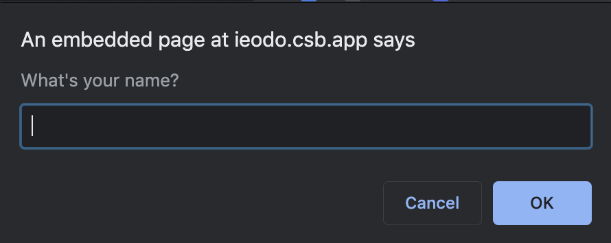
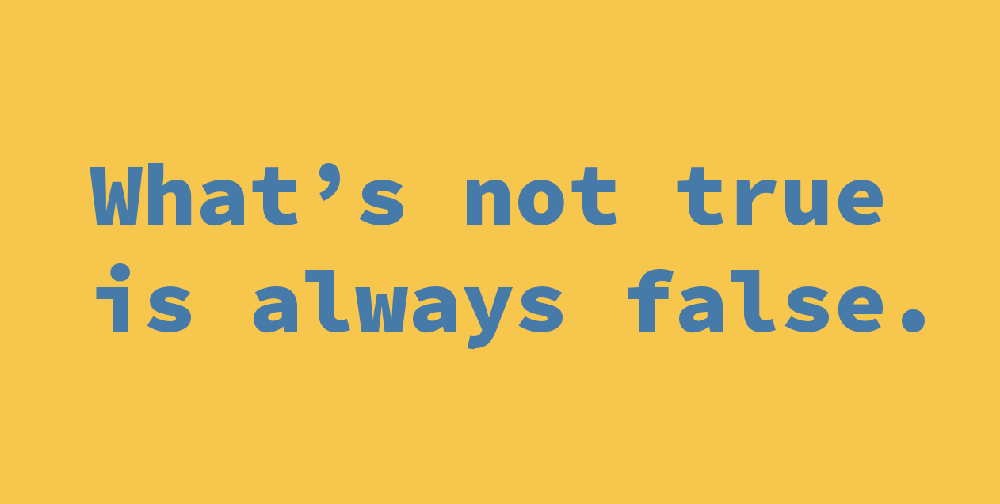

👩🏫 JS Basics 05 - Les instructions conditionnelles
Objectifs
- Écrire des conditions en Javascript
Pré-requis
Avoir validé les quêtes suivantes :
Introduction
Dans les quêtes précédentes, tu as pu découvrir ce qu'est Javascript et à quoi ressemble sa syntaxe. Tu as également appris comment créer des variables et quels sont les différents types de données que l'on peut manipuler.
Dans cette quête, tu apprendras comment écrire des instructions conditionnelles en Javascript.
Les instructions conditionnelles sont un concept essentiel en programmation. Elles permettent aux programmes de prendre des décisions. Un programme incapable de prendre une décision se révèle plutôt inutile : c'est grâce à une logique conditionnelle qu'il est possible de savoir si tu es authentifié ou non sur un site web par exemple.
C'est parti !
Sommaire
Si...Sinon
Pour écrire des conditions en Javascript, tu peux utiliser la structure "if...else".
L'instruction if permet de vérifier une condition (précisée entre les parenthèses). Si la condition est évaluée comme vraie, le code est alors exécuté. Sinon, le code est ignoré.
if (condition) {
// Do something if the condition is true
}
Nous pouvons ajouter une autre instruction, dans le cas où la condition est évaluée comme étant fausse.
else {
// Do something if the condition is false
}
Voici un exemple concret :
const name = "Paul";
if (name === "Paul") {
console.log("Welcome, Paul");
} else {
console.log("Go away!");
}
Dans cet exemple, on créé d'abord une variable name et on lui attribue la valeur "Paul ".
Ensuite, on compare la valeur assignée à cette variable avec la chaîne "Paul". Si le résultat est vrai, alors on affiche "Welcome, Paul " sinon on affiche "Go away!".
Attention, Javascript est sensible à la casse. Ce qui signifie que "Paul" n'est pas équivalent à "paul" !
🔬 Expérience
Créé une condition if...else qui vérifie si le nom est égal à "Bob" ; si oui, affiche "Hello Bob!" ; si non, affiche "You're not Bob, go away!"
https://repl.it/@WildCodeSchool/ifelse
Clique sur le bouton "play" pour exécuter le code. Il est toujours conseillé d'essayer de modifier le code pour le prendre en main.
Voir la solution
const person = "Not Bob";
if (person === "Bob") {
console.log("Hello, Bob!");
} else {
console.log("You're not Bob, go away!");
}
Prompt
Pour rendre les exemples un peu plus interactifs, tu peux utiliser une fonction nommée prompt.
prompt est une fonction qui va afficher une boite de dialogue permettant à l'utilisateur d'entrer du texte.
const userName = prompt("What's your name?");

Écris le code précédent dans la console du navigateur et utilise la méthode console.log pour afficher la valeur de la variable userName.
Tu verras ensuite le texte entré dans la boîte de dialogue s'afficher dans la console.
const userName = prompt("What's your name?");
console.log(userName);
Voici un exemple utilisant repl.it qui execute le code grâce à Node.js.
La fonction prompt dans cet environnement fonctionne différemment que l'exemple dans le navigateur : prompt demandera ici de saisir le texte dans le terminal.
https://repl.it/@WildCodeSchool/WholeConcernedAdware-1
Clique sur le bouton "play" pour exécuter le code. Il est toujours conseillé d'essayer de modifier le code pour le prendre en main.
🔬 Expérience
Ok ! Maintenant tu sais comment utiliser prompt et la structure de contrôle if...else. Écris un programme qui:
- demande à l'utilisateur de saisir un mot de passe ;
- compare ce dernier à une chaîne de caractères choisie (par exemple "secret").
- Si les mots de passe correspondent: affiche "Welcome! 👋" dans la console ;
- Sinon, affiche "Wrong password! ❌".
https://repl.it/@WildCodeSchool/Exercice-prompt
Voir la solution
// We create the variable password and we assign the result of prompt on it
const password = prompt("What is the magic password?");
// We compare the value assigned to pass to the string "secret"
if (password === "secret") {
// If the pass matches the string we print Welcome
console.log("Welcome! 👋");
} else {
// If the pass doesn't match the string we print Welcome
console.log("Wrong password! ❌");
}
Utiliser prompt avec des nombres
Lors de l'utilisation de prompt, ce que l'utilisateur va taper dans la fenêtre de l'invite sera considéré comme une chaîne de caractères.
Si tu veux travailler avec des nombres, tu dois convertir la chaîne de caractères en un nombre. Pour cela, tu peux utiliser la fonction parseInt.
const age = prompt("How old are you?");
console.log(typeof(age));
// String
const ageNumber = parseInt(age);
console.log(typeof(ageNumber));
// Number
Else if
Parfois, on peut avoir plus d'une condition. Par exemple, imagine que tu souhaites permettre à plusieurs personnes de jouer avec ton programme d'avant.
Avec la structure if...else uniquement, cela va générer beaucoup d'instructions imbriquées les unes dans les autres.
Tu vas heureusement pouvoir gérer des "embranchements" pour traiter plus de cas avec else if !
Tu dois écrire else if après un if et avant un else, et tu dois utiliser une condition entre parenthèses.
else if (condition) {
// ...
}
https://repl.it/@WildCodeSchool/Else-if
On stocke la saisie de l'utilisateur dans une variable appelée user.
Ensuite, on compare la valeur saisie avec Paul puis John pour voir si une d'entre elles correspond.
On peut avoir autant de else if que l'on veut.
Le dernier else correspondra toujours à tous les autres cas.
🔬 Expérience
Ecris un programme qui demande à l'utilisateur d'entrer son age (en utilisant prompt), et qui affiche ensuite un message en fonction de sa tranche d'âge :
- Si l'age est inférieur à 3 : "Hello, Baby 🍼!"
- Si l'age est inférieur à 18: "Hi! 👋"
- Si l'age est inférieur à 100: "Greetings 🖖"
- Dans les autres cas: "Wow... 😲"
https://repl.it/@WildCodeSchool/Exercise-else-if
Voir la solution
const userAge = parseInt(prompt("How old are you?"));
if (userAge < 3) {
console.log("Hello, Baby 🍼!");
} else if (userAge < 18) {
console.log("Hi! 👋");
} else if (userAge < 100) {
console.log("Greetings 🖖");
} else {
console.log("Wow... 😲");
}
Les valeurs "truthy" et "falsy"
Lorsque tu écris un bloc if...else, l'expression que tu écris entre parenthèses est évaluée et transformée en booléen.
Par exemple, l'expression 4 === 4 est évaluée comme ("transformée" en) true. Si on place cette dernière dans les parenthèses d'un if, le code sous condition sera exécuté.
Mais que se passe-t-il si tu mets autre chose qu'un booléen à l’intérieur d'une condition ?
Par exemple :
if (1) {
console.log("What's going to happen here ? 🤷♀️");
}
En fait, cela dépend de comment est évaluée la valeur dans un contexte booléen (dans une condition) :
- Certaines valeurs sont dites "truthy" : elle seront évaluées comme étant vraies (
true). - D'autres sont "falsy" et seront évaluées comme étant fausses (
false).
Les valeurs dites "falsy" :
false""0-0nullundefinedNaN
Toutes les autres valeurs sont "truthy" !
Exemple :
let myName = "";
if (myName) {
console.log("Hello you!");
// This will never be run because "empty string" is evaluated as false
} else {
console.log("you don't have a name");
}
Ici, puisque la variable myName est une chaîne vide , la condition est évaluée comme false.
Inversion logique

L'opérateur ! permet d'inverser un booléen. Ainsi, !false est égal à true et !true est égal à false. Cet opérateur permet d'obtenir l'opposé d'une valeur.
Si on veut évaluer l'opposé logique d'une valeur, on peut utiliser le !.
Par exemple, !true vaut false et !false vaut true.
❓ Petit test !
false|||true|||false
# Que vaut !false ?
[x] true
[] false
# Que vaut !(!true) ?
[] false
[x] true
# Que vaut !(!(!(true)))
[] true
[x] false
Autre exemple :
https://repl.it/@WildCodeSchool/SvelteEveryInformationtechnology
ET / OU
Dans une condition, on peut aussi déterminer la véracité d'une combinaison logique de plusieurs expressions en utilisant les mots-clés && ("and") et || ("or").
Exemple:
https://repl.it/@WildCodeSchool/Condition-and-or
Dans ce code, on vérifie uniquement le nom de l'utilisateur dans le premier if. S'il est égal à Paul OU Bob, le code est exécuté.
Dans le deuxième if, on vérifie que le nom vaut "Paul" ET que le mot de passe vaut "secret". Si les deux conditions sont remplies, le code est exécuté.
Lorsque && est utilisé, si un des deux booléens vaut false, tout sera évalué comme false.
Lorsque || est utilisé, si un des deux booléens vaut true, tout sera évalué comme true.
| Booléen 1 | and/or | Booléen 2 | Result |
|---|---|---|---|
| true | && | true | true |
| false | && | false | false |
| true | && | false | false |
| true | | | | true | true |
| false | | | | false | false |
| true | | | | false | true |
false|||true|||false
# Que vaux (!true && !(!false))?
[] true
[x] false
Portée (scope) / Contexte
En Javascript, dès que l'on écrit du code, le contexte est très important : on ne peut pas utiliser une variable déclarée à l'intérieur d'une condition en dehors de cette dernière.
Les accolades { } définissent un contexte local.
Exemple 1 :
const name = "Pierre";
if (name === "Pierre") {
const city = "New York";
if (city === "New York") {
console.log("Welcome " + name + " in " + city);
} else {
console.log("Welcome " + name);
}
// fonctionne correctement à l'intérieur du contexte de la condition
} else {
console.log(name);
// tu verras le nom de la personne
console.log(city);
// tu verras une error 'reference error: city is not defined'
}
Par exemple, dans ce cas, la variable city sera disponible uniquement dans le contexte de la première condition if (à l'intérieur des accolades {}) et elle ne sera pas disponible dans le contexte du else (en dehors du contexte du if).
La variable name est disponible dans toute la condition car elle a été créée en dehors du contexte du if.
Si tu crées une variable à l'intérieur d'accolades {}, cette variable sera disponible uniquement à l'intérieur de ces accolades.
Sachant cela maintenant, nous devrions être capables de créer des conditions qui fonctionnent pour nos projets en tenant compte du contexte.
❓ Quiz
false|||true|||false
# Qu'est ce qu'une valeur "truthy" ?
[x] Une valeur qui est évaluée comme étant "vraie" dans une condition
[] Une valeur qui est évaluée comme étant "fausse" dans une condition
# Sélectionne toutes les valeurs "truthy" dans cette liste :
[] undefined
[] null
[] 0
[x] {}
[x] 1
[x] 100
[x] "Bob"
[x] ["Apple", "Banana", "Kiwi"]
[x] !false
# Sélectionne toutes les valeurs "falsy" dans cette liste :
[x] undefined
[x] null
[x] 0
[] []
[] {}
[] 1
[] 400
[x] !true
# Quel est le résultat de l'expression "true && true" ?
[x] true
[] false
# Quel est le résultat de l'expression "false && true" ?
[] true
[x] false
# Quel est le résultat de l'expression "false && 0" ?
[] true
[x] false
# Quel est le résultat de l'expression "false || true" ?
[x] true
[] false
Les ternaires
Tu peux simplifier l'écriture d'une condition en utilisant l'opérateur ternaire.
Cet opérateur utilise ? et :, respectivement équivalents à if et else :
name === "Bob" ? console.log("Hello, Bob") : console.log("Go Away!");
Comme tu peux le voir, c'est une écriture plus courte. Elle peut paraître un peu étrange au début. Mais pense à ? comme le point d’interrogation à la fin d'une question que tu souhaites poser au programme : est-ce que le nom vaut Bob ? Si oui, fais ci ! Sinon : fais ça.
Ne t'en fais pas si cela n'est pas encore totalement clair pour le moment, nous y reviendrons ultérieurement. Essaie tout de même de te rappeler à quoi ressemble cet opérateur ternaire pour le reconnaitre si tu le rencontres.
Une utilisation abusive ou non appropriée de l'opérateur ternaire peut rendre ton code moins lisible et compréhensible. Assure-toi que son utilisation est justifiée et que cela n'impacte pas la lisibilité de ton code.
Rappelle toi que nous codons avant tout pour des être humains, et qu'il est important de penser à la personne qui lira ton code.
🔬 Expérience
Essaie de réécrire la condition suivante en utilisant l'opérateur ternaire :
const animalName = "Lucky";
if (animalName === "Lucky") {
console.log("Welcome Lucky!");
} else {
console.log("Wrong Cat detected!");
}
Voir la solution
const animalName = "Lucky";
animalName === "Lucky" ? console.log("Welcome Lucky!") : console.log("Go Away!");
// We can also write it like that, which is better ;)
console.log(animalName === "Lucky" ? "Welcome Lucky!" : "Go Away!");
Résumé
- Les conditions sont indispensables en Javascript pour ajouter de la logique à nos programmes.
- On peut utiliser la structure
if...elsepour écrire ces dernières.
Une très bonne ressource pour apprendre les conditions en JS
Challenge
Es-tu prêt à relever un défi ?
Déclare et définis trois variables a, b et c à l'aide d'une valeur numérique.
(ex : const a = 1)
- Si les trois variables sont égales, affiche "Les trois variables sont identiques" dans la console
- Si seulement deux des variables sont égales, affiche "Deux des variables sont identiques" dans la console
- Si les variables sont toutes différentes, affiche "toutes les variables sont différentes" dans la console
Poste ton code en solution.
Ressources partagées sur cette quête
- Pour savour ce qui est 'truthy' et 'falsy'https://dorey.github.io/JavaScript-Equality-Table/
- Une façon simple de comprendre switch case en JShttps://www.youtube.com/watch?v=DQ_ztRXD8vs
- Les conditions mis en pratique https://www.youtube.com/watch?v=DmHuw9dGYRw&ab_channel=Grafikart.fr
- Courte vidéo pour comprendre parseInt et parseFloat :)https://www.youtube.com/watch?v=OXpTBQtL4nY
- Bon site pour s'exercer et découvrir le Javascripthttps://www.freecodecamp.org/learn/javascript-algorithms-and-data-structures-v8/